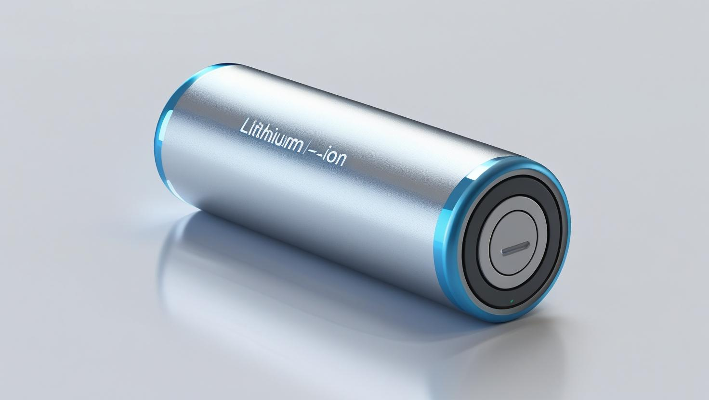

Estudantes da Universidade de Oxford desenvolvem bateria que dura até dez anos!
Por Giovanni Oliveira, TecScope
Um grupo de estudantes da Universidade de Oxford surpreendeu a comunidade científica nesta semana ao anunciar a criação de uma nova bateria de alta eficiência,
capaz de durar até 10 anos sem recarga completa — um avanço que pode transformar profundamente os setores de eletrônicos, veículos elétricos e dispositivos médicos.
A inovação foi apresentada durante o Encontro Internacional de Tecnologias Sustentáveis, realizado em Boston, e já chamou a atenção de gigantes da indústria como Tesla, Samsung e Siemens.

A bateria, batizada de "Lithium-ion", utiliza uma nova composição de materiais baseada em grafeno modificado com nanocristais de lítio e um sistema autônomo de regeneração energética. Segundo os desenvolvedores, ela consegue manter até 95% da sua capacidade original após 10 anos de uso contínuo.
O projeto foi liderado pelos estudantes de engenharia Emily Rodriguez, Tariq Khan e Mei Tanaka, todos com menos de 25 anos. O grupo faz parte do laboratório de pesquisa em energia sustentável da universidade.
"Nosso objetivo era resolver o problema da degradação das baterias sem comprometer a capacidade e a segurança", explicou Rodriguez durante a apresentação. "Depois de dois anos de testes, chegamos a uma estrutura molecular que se autoestabiliza, prolongando a vida útil da célula energética."